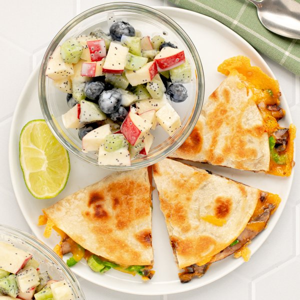

Mushroom, Cheddar & Jalapeño Quesadilla with Poppy Seed Fruit Salad

Total Time
30 min
Nutrition (per serving)
662 kcalCalories
25.9 gProtein
72.6 gCarbs
32.1 gFat
Full nutrition table
| Calories | 662 kcal |
| Total fat | 32.1 g |
| Saturated fat | 13.2 g |
| Trans fat | 1.4 g |
| Cholesterol | 59.4 mg |
| Sodium | 819 mg |
| Carbohydrates | 72.6 g |
| Fiber | 9.3 g |
| Sugars | 29.3 g |
| Protein | 25.9 g |
| Potassium | 951.5 mg |
| Calcium | 545.3 mg |
| Iron | 3.6 mg |
| Vitamin A | 954.2 IU |
| Vitamin C | 89.1 mg |
| Vitamin D | 22 IU |
Cookware
Ingredients
- 1 (6 oz) pkgblueberries
- 1 (8 oz) blockcheddar cheese
- 2Gala apples
- 2 clovesgarlic
- 1 small bunchgreen onions (scallions)
- 2jalapeño peppers
- 4kiwifruit
- 4large flour tortillas
- 1lime
- ½ cupplain Greek yogurt
- 4 capsportobello mushrooms
- black pepper
- brown sugar
- chili powder
- extra virgin olive oil
- poppy seeds
- salt
Steps
- Wash and dry the fresh produce.1 lime
4 caps portobello mushrooms
2 jalapeño peppers
1 small bunch green onions (scallions)
2 Gala apples
4 kiwifruit
1 (6 oz) pkg blueberries - Juice lime into a medium bowl; add yogurt, poppy seeds, and sugar. Whisk to combine the dressing and set aside.½ cup plain Greek yogurt
2 tsp poppy seeds
2 tsp brown sugar - Remove stems from mushrooms and carefully scrape out the gills; halve and slice crosswise into ¼-inch thick pieces.
- Preheat a large skillet over medium-high heat.
- While the skillet heats up, peel and mince garlic.2 cloves garlic
- Once the skillet is hot, add oil and swirl to coat the bottom; add mushrooms, garlic, and spices. Cook, stirring occasionally, until soft, 4-5 minutes; remove from heat.4 tsp extra virgin olive oil
1 tsp chili powder
½ tsp salt
½ tsp black pepper - Meanwhile, halve jalapeño peppers lengthwise; seed and remove ribs with a spoon. Slice crosswise into thin half-moons. (Be careful with jalapeños; do not touch your eyes and ensure you wash your hands after handling or wear gloves while preparing.)
- Trim green onions and cut crosswise into ¼-inch pieces.
- Coarsely grate cheese.1 (8 oz) block cheddar cheese
- To assemble the quesadillas, lay tortillas on a flat surface and divide mushrooms, jalapeño, green onion, and cheese between them, arranging on one half of each tortilla; fold in half to close. (Reserve skillet for the next step.)4 large flour tortillas
- Wipe the skillet clean with paper towels and return to medium-high heat.
- Once the skillet is hot, add oil and swirl to coat the bottom. Working in batches, place assembled quesadillas in the skillet and cook, flipping halfway through, until golden on both sides, 5-6 minutes. Remove to a plate.2 tsp extra virgin olive oil
- Meanwhile, using a clean cutting board, quarter, core, and medium dice apples; add to the bowl with the dressing.
- Trim, peel, and medium dice kiwis; add to the bowl, along with the blueberries, and stir to combine the fruit salad.
- Cut each quesadilla into wedges and divide between plates. Serve with fruit salad on the side and enjoy!